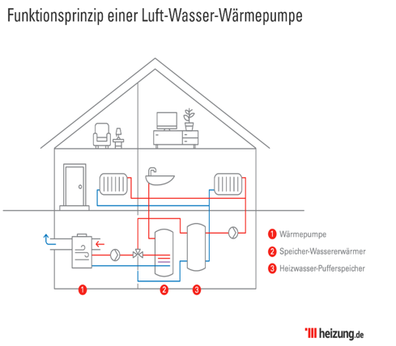
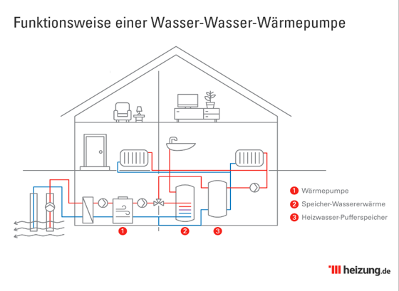
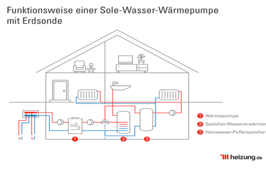

Wärmepumpen gelten als energiesparendes und umweltschonendes Heiz-system.
Eine Wärmepumpe ist einfach ein Gerät, das Wärme von einem Ort aufnimmt und an einen anderen Ort überträgt. Wärmepumpen können mit einen kleinen Anteil Strom für Antrieb und Pumpe, Wärme aus der Luft, dem Wasser oder dem Boden außerhalb des Gebäudes gewinnen. In jedem Fall besteht das System aus drei Komponenten, eine Wärmequellenangabe, einer Wärmepumpe und einem Verteilsystem.
Wärmepumpen stellen eine energieeffiziente Alternative für alle Klimazonen dar. Während der Heizperiode übertragen Wärmepumpen Wärme aus kalter Luft ins Haus und während der Kühlsaison, Wärme vom Haus nach außen transportieren. Wärmepumpen können effizient für angenehme Wohntemperaturen sorgen, da sie Wärme übertragen, anstatt Wärme zu erzeugen.
Sie gelten als wartungsarm, haben eine lange Lebensdauer und erzeugen keine direkten Emissionen.
Wärmepumpe funktionsweise passiert auf dem Prinzip der Aufnahme, Verdichtung, Abgabe und Entspannung.
[Bei Luft-Wärmepumpen wird die Außenluft über einen Ventilator entzogen]
[Bei Luftpumpen wird das Kältemittel durch die Außenluft erhitzt]
Luft-Wasser-Wärmepumpen gewinnt Wärmeenergie aus der Luft.
Luft-Wasser-Wärmepumpe hat durchschnittliche Jahresarbeitszahl von 2,5, das heißt sie ist weniger effizient als Wasser-Wasser-Wärmepumpe oder Sole-Wasser-Wärmepumpe. Sie ist stark von Außentemperatur abhängig und macht Geräusche. Im Vergleich zu anderen Wärmepumpen Luft-Wasser-Wärmepumpe hat günstige Anschaffungs- und Installationskosten.
Wasser-Wasser-Wärmepumpe gewinnt Wärmeenergie aus dem Grundwasser.
Wasser-Wasser-Wärmepumpe hat eine durchschnittliche Jahresarbeitszahl von 5. Sie zeichnet sich durch eine hohe Lebenswartung aus und kostet viel
Sole-Wasser-Wärmepumpe gewinnt Wärmeenergie aus Kollektoren und Sonden. Sie kommt mit Erdsonde auf Jahresarbeitszahl von 4 bis 4,5.
- Die Jahresarbeitszahl stellt das Verhältnis der im Laufe des Jahres abgegebene Wärme zur elektrischen Energie (beides in Kilowattstunden – kWh) dar, die zum Antrieb der Wärmepumpe einschließlich Verdichter und Nebenantrieben aufgewendet wird.
Je höher die Jahresarbeitszahl einer Wärmepumpe ist, desto energieeffizienter, umweltfreundlicher und kostengünstiger arbeitet sie.
- Die Leistungszahl drückt das Verhältnis zwischen der angegebenen Nutzwärmeleistung und die elektrische Leistung (in Kilowatt- KW) aus.
Die Leistungszahl bezieht sich nur auf einen einzelnen Betriebszustand.
Beschreiben kann man dies mit der Leistungszahl „Ɛ" und der Jahresarbeitszahl „β a".
Ɛ = T / T- T0
(T ist der Umgebungstemperatur z. B. Raumtemperatur in Kelvin)
(T0 ist Umgebungstemperatur, aus welcher Wärme bezogen werden soll z. B. Erde Temperatur in Kelvin)
β a = Q ab /Q
(Q ab ist der erzeugten Wärmeenergie in KWh)
(Q ist die Leistungsaufnahme von elektrischer Energie in KWh)